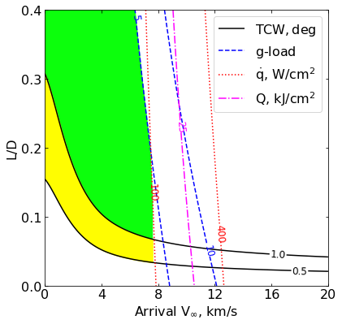
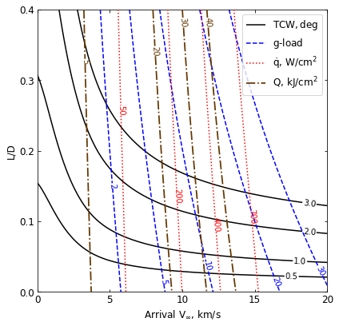

08 - a - Titan - Feasibility Charts - Lift¶
[1]:
from AMAT.planet import Planet
from AMAT.vehicle import Vehicle
import numpy as np
from scipy import interpolate
import matplotlib.pyplot as plt
from matplotlib import rcParams
from matplotlib.patches import Polygon
import os
[2]:
# Create a planet object for Titan
planet=Planet("TITAN")
# Load an nominal atmospheric profile with height, temp, pressure, density data
planet.loadAtmosphereModel('../atmdata/Titan/titan-gram-avg.dat', 0 , 1 , 2, 3)
[10]:
vinf_kms_array = np.linspace( 0.0, 20.0, 11)
LD_array = np.linspace( 0.0, 0.4 , 11)
[4]:
os.makedirs('../data/jsr-paper/titan/')
[11]:
runID = 'titan-lift-'
num_total = len(vinf_kms_array)*len(LD_array)
count = 1
v0_kms_array = np.zeros(len(vinf_kms_array))
v0_kms_array[:] = np.sqrt(1.0*(vinf_kms_array[:]*1E3)**2.0 +\
2*np.ones(len(vinf_kms_array))*\
planet.GM/(planet.RP+1000.0*1.0E3))/1.0E3
overShootLimit_array = np.zeros((len(v0_kms_array),len(LD_array)))
underShootLimit_array = np.zeros((len(v0_kms_array),len(LD_array)))
exitflag_os_array = np.zeros((len(v0_kms_array),len(LD_array)))
exitflag_us_array = np.zeros((len(v0_kms_array),len(LD_array)))
TCW_array = np.zeros((len(v0_kms_array),len(LD_array)))
[12]:
planet.h_skip
[12]:
1000000.0
[13]:
for i in range(0,len(v0_kms_array)):
for j in range(0,len(LD_array)):
vehicle=Vehicle('Apollo', 1000.0, 200.0, LD_array[j], 3.1416, 0.0, 1.00, planet)
vehicle.setInitialState(1000.0,0.0,0.0,v0_kms_array[i],0.0,-4.5,0.0,0.0)
vehicle.setSolverParams(1E-5)
overShootLimit_array[i,j], exitflag_os_array[i,j] = vehicle.findOverShootLimit (6000.0, 1.0, -80.0, -4.0, 1E-10, 1700.0)
underShootLimit_array[i,j], exitflag_us_array[i,j] = vehicle.findUnderShootLimit(6000.0, 1.0, -80.0, -4.0, 1E-10, 1700.0)
TCW_array[i,j] = overShootLimit_array[i,j] - underShootLimit_array[i,j]
print("Run #"+str(count)+" of "+ str(num_total)+": Arrival V_infty: "+str(vinf_kms_array[i])+" km/s"+", L/D:"+str(LD_array[j]) + " OSL: "+str(overShootLimit_array[i,j])+" USL: "+str(underShootLimit_array[i,j])+", TCW: "+str(TCW_array[i,j])+" EFOS: "+str(exitflag_os_array[i,j])+ " EFUS: "+str(exitflag_us_array[i,j]))
count = count +1
np.savetxt('../data/jsr-paper/titan/'+runID+'vinf_kms_array.txt',vinf_kms_array)
np.savetxt('../data/jsr-paper/titan/'+runID+'v0_kms_array.txt',v0_kms_array)
np.savetxt('../data/jsr-paper/titan/'+runID+'LD_array.txt',LD_array)
np.savetxt('../data/jsr-paper/titan/'+runID+'overShootLimit_array.txt',overShootLimit_array)
np.savetxt('../data/jsr-paper/titan/'+runID+'exitflag_os_array.txt',exitflag_os_array)
np.savetxt('../data/jsr-paper/titan/'+runID+'undershootLimit_array.txt',underShootLimit_array)
np.savetxt('../data/jsr-paper/titan/'+runID+'exitflag_us_array.txt',exitflag_us_array)
np.savetxt('../data/jsr-paper/titan/'+runID+'TCW_array.txt',TCW_array)
Run #1 of 121: Arrival V_infty: 0.0 km/s, L/D:0.0 OSL: -25.514971257482102 USL: -25.514971257482102, TCW: 0.0 EFOS: 1.0 EFUS: 1.0
Run #2 of 121: Arrival V_infty: 0.0 km/s, L/D:0.04 OSL: -25.45138018635771 USL: -25.580314400805946, TCW: 0.12893421444823616 EFOS: 1.0 EFUS: 1.0
Run #3 of 121: Arrival V_infty: 0.0 km/s, L/D:0.08 OSL: -25.38948930773404 USL: -25.64745317793495, TCW: 0.2579638702009106 EFOS: 1.0 EFUS: 1.0
Run #4 of 121: Arrival V_infty: 0.0 km/s, L/D:0.12 OSL: -25.32925233032438 USL: -25.716441067765118, TCW: 0.3871887374407379 EFOS: 1.0 EFUS: 1.0
Run #5 of 121: Arrival V_infty: 0.0 km/s, L/D:0.16 OSL: -25.270583539615473 USL: -25.78731656072705, TCW: 0.5167330211115768 EFOS: 1.0 EFUS: 1.0
Run #6 of 121: Arrival V_infty: 0.0 km/s, L/D:0.2 OSL: -25.213493534782174 USL: -25.86014109790267, TCW: 0.6466475631204958 EFOS: 1.0 EFUS: 1.0
Run #7 of 121: Arrival V_infty: 0.0 km/s, L/D:0.24 OSL: -25.15796347541982 USL: -25.93496696183138, TCW: 0.7770034864115587 EFOS: 1.0 EFUS: 1.0
Run #8 of 121: Arrival V_infty: 0.0 km/s, L/D:0.28 OSL: -25.10358803123745 USL: -26.011832889293146, TCW: 0.9082448580556957 EFOS: 1.0 EFUS: 1.0
Run #9 of 121: Arrival V_infty: 0.0 km/s, L/D:0.32 OSL: -25.050954196871317 USL: -26.090807851131103, TCW: 1.0398536542597867 EFOS: 1.0 EFUS: 1.0
Run #10 of 121: Arrival V_infty: 0.0 km/s, L/D:0.36 OSL: -24.99971933953566 USL: -26.171878132998245, TCW: 1.172158793462586 EFOS: 1.0 EFUS: 1.0
Run #11 of 121: Arrival V_infty: 0.0 km/s, L/D:0.4 OSL: -24.949835860508756 USL: -26.255228782465565, TCW: 1.305392921956809 EFOS: 1.0 EFUS: 1.0
Run #12 of 121: Arrival V_infty: 2.0 km/s, L/D:0.0 OSL: -31.015925318410154 USL: -31.015925318410154, TCW: 0.0 EFOS: 1.0 EFUS: 1.0
Run #13 of 121: Arrival V_infty: 2.0 km/s, L/D:0.04 OSL: -30.903608585220354 USL: -31.133143656363245, TCW: 0.22953507114289096 EFOS: 1.0 EFUS: 1.0
Run #14 of 121: Arrival V_infty: 2.0 km/s, L/D:0.08 OSL: -30.795854513995437 USL: -31.25540595901839, TCW: 0.459551445022953 EFOS: 1.0 EFUS: 1.0
Run #15 of 121: Arrival V_infty: 2.0 km/s, L/D:0.12 OSL: -30.692822433265974 USL: -31.38304972487822, TCW: 0.6902272916122456 EFOS: 1.0 EFUS: 1.0
Run #16 of 121: Arrival V_infty: 2.0 km/s, L/D:0.16 OSL: -30.59419914830505 USL: -31.51631139749952, TCW: 0.9221122491944698 EFOS: 1.0 EFUS: 1.0
Run #17 of 121: Arrival V_infty: 2.0 km/s, L/D:0.2 OSL: -30.49964146029015 USL: -31.655628093983978, TCW: 1.1559866336938285 EFOS: 1.0 EFUS: 1.0
Run #18 of 121: Arrival V_infty: 2.0 km/s, L/D:0.24 OSL: -30.409022368101432 USL: -31.800695425281447, TCW: 1.3916730571800144 EFOS: 1.0 EFUS: 1.0
Run #19 of 121: Arrival V_infty: 2.0 km/s, L/D:0.28 OSL: -30.32214499220936 USL: -31.95157759664653, TCW: 1.62943260443717 EFOS: 1.0 EFUS: 1.0
Run #20 of 121: Arrival V_infty: 2.0 km/s, L/D:0.32 OSL: -30.238926814559818 USL: -32.109300839016214, TCW: 1.870374024456396 EFOS: 1.0 EFUS: 1.0
Run #21 of 121: Arrival V_infty: 2.0 km/s, L/D:0.36 OSL: -30.15904302841227 USL: -32.2739311681471, TCW: 2.1148881397348305 EFOS: 1.0 EFUS: 1.0
Run #22 of 121: Arrival V_infty: 2.0 km/s, L/D:0.4 OSL: -30.08237587226904 USL: -32.445119427142345, TCW: 2.3627435548733047 EFOS: 1.0 EFUS: 1.0
Run #23 of 121: Arrival V_infty: 4.0 km/s, L/D:0.0 OSL: -34.97237434810813 USL: -34.97237434810813, TCW: 0.0 EFOS: 1.0 EFUS: 1.0
Run #24 of 121: Arrival V_infty: 4.0 km/s, L/D:0.04 OSL: -34.787472070365766 USL: -35.169872504193336, TCW: 0.38240043382756994 EFOS: 1.0 EFUS: 1.0
Run #25 of 121: Arrival V_infty: 4.0 km/s, L/D:0.08 OSL: -34.61436116441837 USL: -35.38073633092063, TCW: 0.7663751665022573 EFOS: 1.0 EFUS: 1.0
Run #26 of 121: Arrival V_infty: 4.0 km/s, L/D:0.12 OSL: -34.45243507477062 USL: -35.60600105056437, TCW: 1.1535659757937538 EFOS: 1.0 EFUS: 1.0
Run #27 of 121: Arrival V_infty: 4.0 km/s, L/D:0.16 OSL: -34.30082951927761 USL: -35.84596524540757, TCW: 1.5451357261299563 EFOS: 1.0 EFUS: 1.0
Run #28 of 121: Arrival V_infty: 4.0 km/s, L/D:0.2 OSL: -34.15872400577791 USL: -36.10159908828791, TCW: 1.9428750825099996 EFOS: 1.0 EFUS: 1.0
Run #29 of 121: Arrival V_infty: 4.0 km/s, L/D:0.24 OSL: -34.025490372539934 USL: -36.37381047389863, TCW: 2.348320101358695 EFOS: 1.0 EFUS: 1.0
Run #30 of 121: Arrival V_infty: 4.0 km/s, L/D:0.28 OSL: -33.90041375951114 USL: -36.662981463021424, TCW: 2.7625677035102854 EFOS: 1.0 EFUS: 1.0
Run #31 of 121: Arrival V_infty: 4.0 km/s, L/D:0.32 OSL: -33.7828604920287 USL: -36.9701674915741, TCW: 3.187306999545399 EFOS: 1.0 EFUS: 1.0
Run #32 of 121: Arrival V_infty: 4.0 km/s, L/D:0.36 OSL: -33.6722075456164 USL: -37.29582787098116, TCW: 3.6236203253647545 EFOS: 1.0 EFUS: 1.0
Run #33 of 121: Arrival V_infty: 4.0 km/s, L/D:0.4 OSL: -33.56788355479148 USL: -37.640593710872054, TCW: 4.072710156080575 EFOS: 1.0 EFUS: 1.0
Run #34 of 121: Arrival V_infty: 6.0 km/s, L/D:0.0 OSL: -36.55339961955906 USL: -36.55339961955906, TCW: 0.0 EFOS: 1.0 EFUS: 1.0
Run #35 of 121: Arrival V_infty: 6.0 km/s, L/D:0.04 OSL: -36.30991351896955 USL: -36.81863568785775, TCW: 0.5087221688881982 EFOS: 1.0 EFUS: 1.0
Run #36 of 121: Arrival V_infty: 6.0 km/s, L/D:0.08 OSL: -36.08649113976935 USL: -37.10681944811222, TCW: 1.0203283083428687 EFOS: 1.0 EFUS: 1.0
Run #37 of 121: Arrival V_infty: 6.0 km/s, L/D:0.12 OSL: -35.88128173923178 USL: -37.42006860019683, TCW: 1.5387868609650468 EFOS: 1.0 EFUS: 1.0
Run #38 of 121: Arrival V_infty: 6.0 km/s, L/D:0.16 OSL: -35.69216382782179 USL: -37.759508941322565, TCW: 2.067345113500778 EFOS: 1.0 EFUS: 1.0
Run #39 of 121: Arrival V_infty: 6.0 km/s, L/D:0.2 OSL: -35.51825936667592 USL: -38.12718914391007, TCW: 2.6089297772341524 EFOS: 1.0 EFUS: 1.0
Run #40 of 121: Arrival V_infty: 6.0 km/s, L/D:0.24 OSL: -35.35803283409405 USL: -38.52427348592391, TCW: 3.1662406518298667 EFOS: 1.0 EFUS: 1.0
Run #41 of 121: Arrival V_infty: 6.0 km/s, L/D:0.28 OSL: -35.20994569329196 USL: -38.95232763955937, TCW: 3.7423819462674146 EFOS: 1.0 EFUS: 1.0
Run #42 of 121: Arrival V_infty: 6.0 km/s, L/D:0.32 OSL: -35.07268943973759 USL: -39.411855873411696, TCW: 4.339166433674109 EFOS: 1.0 EFUS: 1.0
Run #43 of 121: Arrival V_infty: 6.0 km/s, L/D:0.36 OSL: -34.94514826366867 USL: -39.90427581026961, TCW: 4.959127546600939 EFOS: 1.0 EFUS: 1.0
Run #44 of 121: Arrival V_infty: 6.0 km/s, L/D:0.4 OSL: -34.82630711933598 USL: -40.43011636465599, TCW: 5.603809245320008 EFOS: 1.0 EFUS: 1.0
Run #45 of 121: Arrival V_infty: 8.0 km/s, L/D:0.0 OSL: -37.30830402138599 USL: -37.30830402138599, TCW: 0.0 EFOS: 1.0 EFUS: 1.0
Run #46 of 121: Arrival V_infty: 8.0 km/s, L/D:0.04 OSL: -37.01922867968824 USL: -37.62797248840434, TCW: 0.608743808716099 EFOS: 1.0 EFUS: 1.0
Run #47 of 121: Arrival V_infty: 8.0 km/s, L/D:0.08 OSL: -36.75789386102406 USL: -37.98048920803922, TCW: 1.222595347015158 EFOS: 1.0 EFUS: 1.0
Run #48 of 121: Arrival V_infty: 8.0 km/s, L/D:0.12 OSL: -36.52138110681335 USL: -38.36921853662716, TCW: 1.8478374298138078 EFOS: 1.0 EFUS: 1.0
Run #49 of 121: Arrival V_infty: 8.0 km/s, L/D:0.16 OSL: -36.306709369353484 USL: -38.796157593489625, TCW: 2.48944822413614 EFOS: 1.0 EFUS: 1.0
Run #50 of 121: Arrival V_infty: 8.0 km/s, L/D:0.2 OSL: -36.11226072874706 USL: -39.26360473242676, TCW: 3.1513440036796965 EFOS: 1.0 EFUS: 1.0
Run #51 of 121: Arrival V_infty: 8.0 km/s, L/D:0.24 OSL: -35.935070643321524 USL: -39.77331844205764, TCW: 3.83824779873612 EFOS: 1.0 EFUS: 1.0
Run #52 of 121: Arrival V_infty: 8.0 km/s, L/D:0.28 OSL: -35.77242139813097 USL: -40.32779188503628, TCW: 4.5553704869053036 EFOS: 1.0 EFUS: 1.0
Run #53 of 121: Arrival V_infty: 8.0 km/s, L/D:0.32 OSL: -35.624574055218545 USL: -40.927684062386106, TCW: 5.303110007167561 EFOS: 1.0 EFUS: 1.0
Run #54 of 121: Arrival V_infty: 8.0 km/s, L/D:0.36 OSL: -35.48770683895782 USL: -41.57504633086501, TCW: 6.087339491907187 EFOS: 1.0 EFUS: 1.0
Run #55 of 121: Arrival V_infty: 8.0 km/s, L/D:0.4 OSL: -35.36111286779487 USL: -42.27051441576623, TCW: 6.909401547971356 EFOS: 1.0 EFUS: 1.0
Run #56 of 121: Arrival V_infty: 10.0 km/s, L/D:0.0 OSL: -37.73500176645757 USL: -37.73500176645757, TCW: 0.0 EFOS: 1.0 EFUS: 1.0
Run #57 of 121: Arrival V_infty: 10.0 km/s, L/D:0.04 OSL: -37.40933102440977 USL: -38.0995362964386, TCW: 0.6902052720288339 EFOS: 1.0 EFUS: 1.0
Run #58 of 121: Arrival V_infty: 10.0 km/s, L/D:0.08 OSL: -37.11848095314417 USL: -38.50691511950208, TCW: 1.3884341663579107 EFOS: 1.0 EFUS: 1.0
Run #59 of 121: Arrival V_infty: 10.0 km/s, L/D:0.12 OSL: -36.858614949484036 USL: -38.96069325457938, TCW: 2.102078305095347 EFOS: 1.0 EFUS: 1.0
Run #60 of 121: Arrival V_infty: 10.0 km/s, L/D:0.16 OSL: -36.625891531512025 USL: -39.46397802513093, TCW: 2.8380864936189028 EFOS: 1.0 EFUS: 1.0
Run #61 of 121: Arrival V_infty: 10.0 km/s, L/D:0.2 OSL: -36.416870136745274 USL: -40.020147596951574, TCW: 3.6032774602063 EFOS: 1.0 EFUS: 1.0
Run #62 of 121: Arrival V_infty: 10.0 km/s, L/D:0.24 OSL: -36.22781270735504 USL: -40.63134053834801, TCW: 4.403527830992971 EFOS: 1.0 EFUS: 1.0
Run #63 of 121: Arrival V_infty: 10.0 km/s, L/D:0.28 OSL: -36.057115732255625 USL: -41.299823124270915, TCW: 5.242707392015291 EFOS: 1.0 EFUS: 1.0
Run #64 of 121: Arrival V_infty: 10.0 km/s, L/D:0.32 OSL: -35.90142396457668 USL: -42.027264101248875, TCW: 6.1258401366721955 EFOS: 1.0 EFUS: 1.0
Run #65 of 121: Arrival V_infty: 10.0 km/s, L/D:0.36 OSL: -35.75892305646266 USL: -42.81509491542238, TCW: 7.056171858959715 EFOS: 1.0 EFUS: 1.0
Run #66 of 121: Arrival V_infty: 10.0 km/s, L/D:0.4 OSL: -35.62774777177037 USL: -43.66371442764648, TCW: 8.03596665587611 EFOS: 1.0 EFUS: 1.0
Run #67 of 121: Arrival V_infty: 12.0 km/s, L/D:0.0 OSL: -38.00705658584411 USL: -38.00705658584411, TCW: 0.0 EFOS: 1.0 EFUS: 1.0
Run #68 of 121: Arrival V_infty: 12.0 km/s, L/D:0.04 OSL: -37.651045319136756 USL: -38.409662422640395, TCW: 0.7586171035036386 EFOS: 1.0 EFUS: 1.0
Run #69 of 121: Arrival V_infty: 12.0 km/s, L/D:0.08 OSL: -37.33656026625613 USL: -38.8638374414877, TCW: 1.5272771752315748 EFOS: 1.0 EFUS: 1.0
Run #70 of 121: Arrival V_infty: 12.0 km/s, L/D:0.12 OSL: -37.058427575277165 USL: -39.37490949487983, TCW: 2.3164819196026656 EFOS: 1.0 EFUS: 1.0
Run #71 of 121: Arrival V_infty: 12.0 km/s, L/D:0.16 OSL: -36.81180312178185 USL: -39.94635842737989, TCW: 3.1345553055980417 EFOS: 1.0 EFUS: 1.0
Run #72 of 121: Arrival V_infty: 12.0 km/s, L/D:0.2 OSL: -36.592206591820286 USL: -40.58190076709798, TCW: 3.989694175277691 EFOS: 1.0 EFUS: 1.0
Run #73 of 121: Arrival V_infty: 12.0 km/s, L/D:0.24 OSL: -36.395653579158534 USL: -41.28433297963056, TCW: 4.888679400472029 EFOS: 1.0 EFUS: 1.0
Run #74 of 121: Arrival V_infty: 12.0 km/s, L/D:0.28 OSL: -36.21811121468272 USL: -42.05645120369809, TCW: 5.838339989015367 EFOS: 1.0 EFUS: 1.0
Run #75 of 121: Arrival V_infty: 12.0 km/s, L/D:0.32 OSL: -36.057930737475544 USL: -42.89915537464185, TCW: 6.841224637166306 EFOS: 1.0 EFUS: 1.0
Run #76 of 121: Arrival V_infty: 12.0 km/s, L/D:0.36 OSL: -35.91175047795696 USL: -43.81437718100278, TCW: 7.902626703045826 EFOS: 1.0 EFUS: 1.0
Run #77 of 121: Arrival V_infty: 12.0 km/s, L/D:0.4 OSL: -35.777677630212565 USL: -44.80187549837865, TCW: 9.024197868166084 EFOS: 1.0 EFUS: 1.0
Run #78 of 121: Arrival V_infty: 14.0 km/s, L/D:0.0 OSL: -38.19568794645966 USL: -38.19568794645966, TCW: 0.0 EFOS: 1.0 EFUS: 1.0
Run #79 of 121: Arrival V_infty: 14.0 km/s, L/D:0.04 OSL: -37.813956308047636 USL: -38.631183661727846, TCW: 0.8172273536802095 EFOS: 1.0 EFUS: 1.0
Run #80 of 121: Arrival V_infty: 14.0 km/s, L/D:0.08 OSL: -37.47999176555459 USL: -39.12694387337251, TCW: 1.6469521078179241 EFOS: 1.0 EFUS: 1.0
Run #81 of 121: Arrival V_infty: 14.0 km/s, L/D:0.12 OSL: -37.1872010103325 USL: -39.68888433560642, TCW: 2.501683325273916 EFOS: 1.0 EFUS: 1.0
Run #82 of 121: Arrival V_infty: 14.0 km/s, L/D:0.16 OSL: -36.92970369957766 USL: -40.32111611176515, TCW: 3.391412412187492 EFOS: 1.0 EFUS: 1.0
Run #83 of 121: Arrival V_infty: 14.0 km/s, L/D:0.2 OSL: -36.70208573294076 USL: -41.0287545419269, TCW: 4.326668808986142 EFOS: 1.0 EFUS: 1.0
Run #84 of 121: Arrival V_infty: 14.0 km/s, L/D:0.24 OSL: -36.499621000071784 USL: -41.81471172023157, TCW: 5.3150907201597875 EFOS: 1.0 EFUS: 1.0
Run #85 of 121: Arrival V_infty: 14.0 km/s, L/D:0.28 OSL: -36.31829377235408 USL: -42.680748409053194, TCW: 6.362454636699113 EFOS: 1.0 EFUS: 1.0
Run #86 of 121: Arrival V_infty: 14.0 km/s, L/D:0.32 OSL: -36.154223885005194 USL: -43.62922828438241, TCW: 7.475004399377212 EFOS: 1.0 EFUS: 1.0
Run #87 of 121: Arrival V_infty: 14.0 km/s, L/D:0.36 OSL: -36.00554739051586 USL: -44.66006945122717, TCW: 8.654522060711315 EFOS: 1.0 EFUS: 1.0
Run #88 of 121: Arrival V_infty: 14.0 km/s, L/D:0.4 OSL: -35.86953031488156 USL: -45.773085576285666, TCW: 9.903555261404108 EFOS: 1.0 EFUS: 1.0
Run #89 of 121: Arrival V_infty: 16.0 km/s, L/D:0.0 OSL: -38.334795668240986 USL: -38.334795668240986, TCW: 0.0 EFOS: 1.0 EFUS: 1.0
Run #90 of 121: Arrival V_infty: 16.0 km/s, L/D:0.04 OSL: -37.93104953922739 USL: -38.799327109591104, TCW: 0.8682775703637162 EFOS: 1.0 EFUS: 1.0
Run #91 of 121: Arrival V_infty: 16.0 km/s, L/D:0.08 OSL: -37.58043908113177 USL: -39.33223628217456, TCW: 1.7517972010427911 EFOS: 1.0 EFUS: 1.0
Run #92 of 121: Arrival V_infty: 16.0 km/s, L/D:0.12 OSL: -37.27554415151462 USL: -39.940170897760254, TCW: 2.664626746245631 EFOS: 1.0 EFUS: 1.0
Run #93 of 121: Arrival V_infty: 16.0 km/s, L/D:0.16 OSL: -37.00929536396143 USL: -40.62822910277464, TCW: 3.6189337388132117 EFOS: 1.0 EFUS: 1.0
Run #94 of 121: Arrival V_infty: 16.0 km/s, L/D:0.2 OSL: -36.77539663400603 USL: -41.40138798663611, TCW: 4.625991352630081 EFOS: 1.0 EFUS: 1.0
Run #95 of 121: Arrival V_infty: 16.0 km/s, L/D:0.24 OSL: -36.56842432279518 USL: -42.26356028429291, TCW: 5.695135961497726 EFOS: 1.0 EFUS: 1.0
Run #96 of 121: Arrival V_infty: 16.0 km/s, L/D:0.28 OSL: -36.383834564116114 USL: -43.21647359938288, TCW: 6.832639035266766 EFOS: 1.0 EFUS: 1.0
Run #97 of 121: Arrival V_infty: 16.0 km/s, L/D:0.32 OSL: -36.21736386305565 USL: -44.2612672174364, TCW: 8.043903354380745 EFOS: 1.0 EFUS: 1.0
Run #98 of 121: Arrival V_infty: 16.0 km/s, L/D:0.36 OSL: -36.06689985177945 USL: -45.39768820158497, TCW: 9.330788349805516 EFOS: 1.0 EFUS: 1.0
Run #99 of 121: Arrival V_infty: 16.0 km/s, L/D:0.4 OSL: -35.929522839061974 USL: -46.625458093883935, TCW: 10.695935254821961 EFOS: 1.0 EFUS: 1.0
Run #100 of 121: Arrival V_infty: 18.0 km/s, L/D:0.0 OSL: -38.44211545330836 USL: -38.44211545330836, TCW: 0.0 EFOS: 1.0 EFUS: 1.0
Run #101 of 121: Arrival V_infty: 18.0 km/s, L/D:0.04 OSL: -38.019047516736464 USL: -38.932749327421334, TCW: 0.91370181068487 EFOS: 1.0 EFUS: 1.0
Run #102 of 121: Arrival V_infty: 18.0 km/s, L/D:0.08 OSL: -37.65421579478425 USL: -39.49912609837702, TCW: 1.8449103035927692 EFOS: 1.0 EFUS: 1.0
Run #103 of 121: Arrival V_infty: 18.0 km/s, L/D:0.12 OSL: -37.33909472367304 USL: -40.14884140600043, TCW: 2.8097466823273862 EFOS: 1.0 EFUS: 1.0
Run #104 of 121: Arrival V_infty: 18.0 km/s, L/D:0.16 OSL: -37.06566023533742 USL: -40.888145559740224, TCW: 3.8224853244028054 EFOS: 1.0 EFUS: 1.0
Run #105 of 121: Arrival V_infty: 18.0 km/s, L/D:0.2 OSL: -36.82671503585152 USL: -41.72235094074131, TCW: 4.895635904889787 EFOS: 1.0 EFUS: 1.0
Run #106 of 121: Arrival V_infty: 18.0 km/s, L/D:0.24 OSL: -36.616204994472355 USL: -42.65459139428276, TCW: 6.038386399810406 EFOS: 1.0 EFUS: 1.0
Run #107 of 121: Arrival V_infty: 18.0 km/s, L/D:0.28 OSL: -36.429112633963086 USL: -43.68728968647338, TCW: 7.258177052510291 EFOS: 1.0 EFUS: 1.0
Run #108 of 121: Arrival V_infty: 18.0 km/s, L/D:0.32 OSL: -36.261264120559645 USL: -44.82096457939406, TCW: 8.559700458834413 EFOS: 1.0 EFUS: 1.0
Run #109 of 121: Arrival V_infty: 18.0 km/s, L/D:0.36 OSL: -36.10904980258783 USL: -46.0543223132554, TCW: 9.945272510667564 EFOS: 1.0 EFUS: 1.0
Run #110 of 121: Arrival V_infty: 18.0 km/s, L/D:0.4 OSL: -35.97068549478354 USL: -47.388277523074066, TCW: 11.417592028290528 EFOS: 1.0 EFUS: 1.0
Run #111 of 121: Arrival V_infty: 20.0 km/s, L/D:0.0 OSL: -38.52810854533891 USL: -38.52810854533891, TCW: 0.0 EFOS: 1.0 EFUS: 1.0
Run #112 of 121: Arrival V_infty: 20.0 km/s, L/D:0.04 OSL: -38.08775701387276 USL: -39.04229659404882, TCW: 0.9545395801760606 EFOS: 1.0 EFUS: 1.0
Run #113 of 121: Arrival V_infty: 20.0 km/s, L/D:0.08 OSL: -37.71045087079983 USL: -39.63922655926217, TCW: 1.9287756884623377 EFOS: 1.0 EFUS: 1.0
Run #114 of 121: Arrival V_infty: 20.0 km/s, L/D:0.12 OSL: -37.38658995805963 USL: -40.32754955024575, TCW: 2.9409595921861182 EFOS: 1.0 EFUS: 1.0
Run #115 of 121: Arrival V_infty: 20.0 km/s, L/D:0.16 OSL: -37.10711297497983 USL: -41.11429143950227, TCW: 4.00717846452244 EFOS: 1.0 EFUS: 1.0
Run #116 of 121: Arrival V_infty: 20.0 km/s, L/D:0.2 OSL: -36.864039080552175 USL: -42.00467576134906, TCW: 5.140636680796888 EFOS: 1.0 EFUS: 1.0
Run #117 of 121: Arrival V_infty: 20.0 km/s, L/D:0.24 OSL: -36.65067914721294 USL: -43.00229972909801, TCW: 6.351620581885072 EFOS: 1.0 EFUS: 1.0
Run #118 of 121: Arrival V_infty: 20.0 km/s, L/D:0.28 OSL: -36.46157456237779 USL: -44.1088317787835, TCW: 7.6472572164057055 EFOS: 1.0 EFUS: 1.0
Run #119 of 121: Arrival V_infty: 20.0 km/s, L/D:0.32 OSL: -36.2923777405631 USL: -45.325105611358595, TCW: 9.032727870795497 EFOS: 1.0 EFUS: 1.0
Run #120 of 121: Arrival V_infty: 20.0 km/s, L/D:0.36 OSL: -36.13915873747828 USL: -46.649327029157575, TCW: 10.510168291679292 EFOS: 1.0 EFUS: 1.0
Run #121 of 121: Arrival V_infty: 20.0 km/s, L/D:0.4 OSL: -36.00003748846211 USL: -48.08002977605793, TCW: 12.079992287595815 EFOS: 1.0 EFUS: 1.0
[14]:
acc_net_g_max_array = np.zeros((len(v0_kms_array),len(LD_array)))
stag_pres_atm_max_array = np.zeros((len(v0_kms_array),len(LD_array)))
q_stag_total_max_array = np.zeros((len(v0_kms_array),len(LD_array)))
heatload_max_array = np.zeros((len(v0_kms_array),len(LD_array)))
for i in range(0,len(v0_kms_array)):
for j in range(0,len(LD_array)):
vehicle=Vehicle('Apollo', 1000.0, 200.0, LD_array[j], 3.1416, 0.0, 1.00, planet)
vehicle.setInitialState(1000.0,0.0,0.0,v0_kms_array[i],0.0,overShootLimit_array[i,j],0.0,0.0)
vehicle.setSolverParams(1E-5)
vehicle.propogateEntry (6000.0, 1.0, 180.0)
# Extract and save variables to plot
t_min_os = vehicle.t_minc
h_km_os = vehicle.h_kmc
acc_net_g_os = vehicle.acc_net_g
q_stag_con_os = vehicle.q_stag_con
q_stag_rad_os = vehicle.q_stag_rad
rc_os = vehicle.rc
vc_os = vehicle.vc
stag_pres_atm_os = vehicle.computeStagPres(rc_os,vc_os)/(1.01325E5)
heatload_os = vehicle.heatload
vehicle=Vehicle('Apollo', 1000.0, 200.0, LD_array[j], 3.1416, 0.0, 1.00, planet)
vehicle.setInitialState(1000.0,0.0,0.0,v0_kms_array[i],0.0,underShootLimit_array[i,j],0.0,0.0)
vehicle.setSolverParams(1E-5)
vehicle.propogateEntry (6000.0, 1.0, 0.0)
# Extract and save variable to plot
t_min_us = vehicle.t_minc
h_km_us = vehicle.h_kmc
acc_net_g_us = vehicle.acc_net_g
q_stag_con_us = vehicle.q_stag_con
q_stag_rad_us = vehicle.q_stag_rad
rc_us = vehicle.rc
vc_us = vehicle.vc
stag_pres_atm_us = vehicle.computeStagPres(rc_us,vc_us)/(1.01325E5)
heatload_us = vehicle.heatload
q_stag_total_os = q_stag_con_os + q_stag_rad_os
q_stag_total_us = q_stag_con_us + q_stag_rad_us
acc_net_g_max_array[i,j] = max(max(acc_net_g_os),max(acc_net_g_us))
stag_pres_atm_max_array[i,j] = max(max(stag_pres_atm_os),max(stag_pres_atm_os))
q_stag_total_max_array[i,j] = max(max(q_stag_total_os),max(q_stag_total_us))
heatload_max_array[i,j] = max(max(heatload_os),max(heatload_os))
print("V_infty: "+str(vinf_kms_array[i])+" km/s"+", L/D: "+str(LD_array[j])+" G_MAX: "+str(acc_net_g_max_array[i,j])+" QDOT_MAX: "+str(q_stag_total_max_array[i,j])+" J_MAX: "+str(heatload_max_array[i,j])+" STAG. PRES: "+str(stag_pres_atm_max_array[i,j]))
np.savetxt('../data/jsr-paper/titan/'+runID+'acc_net_g_max_array.txt',acc_net_g_max_array)
np.savetxt('../data/jsr-paper/titan/'+runID+'stag_pres_atm_max_array.txt',stag_pres_atm_max_array)
np.savetxt('../data/jsr-paper/titan/'+runID+'q_stag_total_max_array.txt',q_stag_total_max_array)
np.savetxt('../data/jsr-paper/titan/'+runID+'heatload_max_array.txt',heatload_max_array)
V_infty: 0.0 km/s, L/D: 0.0 G_MAX: 0.08200396558397373 QDOT_MAX: 1.6128023798798288 J_MAX: 1536.7086077036138 STAG. PRES: 0.0016205665732171328
V_infty: 0.0 km/s, L/D: 0.04 G_MAX: 0.08392311894606015 QDOT_MAX: 1.629819830215325 J_MAX: 1549.4686315554088 STAG. PRES: 0.0015848275560768955
V_infty: 0.0 km/s, L/D: 0.08 G_MAX: 0.08602869422199302 QDOT_MAX: 1.647087864777911 J_MAX: 1562.3255686202442 STAG. PRES: 0.0015499792633722183
V_infty: 0.0 km/s, L/D: 0.12 G_MAX: 0.08833020521536614 QDOT_MAX: 1.6646061156614458 J_MAX: 1575.276555200694 STAG. PRES: 0.0015160120666174665
V_infty: 0.0 km/s, L/D: 0.16 G_MAX: 0.09083565523967044 QDOT_MAX: 1.6823680825887173 J_MAX: 1588.1226906463787 STAG. PRES: 0.0014829109068668015
V_infty: 0.0 km/s, L/D: 0.2 G_MAX: 0.0935543723443794 QDOT_MAX: 1.70038296987158 J_MAX: 1601.1925719050464 STAG. PRES: 0.0014506111469076305
V_infty: 0.0 km/s, L/D: 0.24 G_MAX: 0.09649463153723462 QDOT_MAX: 1.7186421978655568 J_MAX: 1614.4140234010536 STAG. PRES: 0.0014192129769681368
V_infty: 0.0 km/s, L/D: 0.28 G_MAX: 0.09966344227079614 QDOT_MAX: 1.7371440214502123 J_MAX: 1627.7659387523051 STAG. PRES: 0.0013886063120675952
V_infty: 0.0 km/s, L/D: 0.32 G_MAX: 0.10306957222300325 QDOT_MAX: 1.755887339198168 J_MAX: 1641.1544465176628 STAG. PRES: 0.0013588378997132294
V_infty: 0.0 km/s, L/D: 0.36 G_MAX: 0.10671606316476555 QDOT_MAX: 1.774850897368081 J_MAX: 1654.6101009789288 STAG. PRES: 0.0013298715843119422
V_infty: 0.0 km/s, L/D: 0.4 G_MAX: 0.11061461581237138 QDOT_MAX: 1.793968336482542 J_MAX: 1668.148643045104 STAG. PRES: 0.001301690365784232
V_infty: 2.0 km/s, L/D: 0.0 G_MAX: 0.2638073796828546 QDOT_MAX: 4.434145648097929 J_MAX: 2668.4893893028634 STAG. PRES: 0.005180739708437693
V_infty: 2.0 km/s, L/D: 0.04 G_MAX: 0.27326671384492407 QDOT_MAX: 4.500726621233144 J_MAX: 2705.5431365747245 STAG. PRES: 0.005006016250111582
V_infty: 2.0 km/s, L/D: 0.08 G_MAX: 0.28354602040719107 QDOT_MAX: 4.568822566103753 J_MAX: 2743.024832455704 STAG. PRES: 0.004838116998771817
V_infty: 2.0 km/s, L/D: 0.12 G_MAX: 0.29474855824442464 QDOT_MAX: 4.638932005661415 J_MAX: 2780.899943976725 STAG. PRES: 0.004677137413136057
V_infty: 2.0 km/s, L/D: 0.16 G_MAX: 0.3068442203455496 QDOT_MAX: 4.710110912612215 J_MAX: 2819.0900630632123 STAG. PRES: 0.004523245904956351
V_infty: 2.0 km/s, L/D: 0.2 G_MAX: 0.3199739828192184 QDOT_MAX: 4.783024265276189 J_MAX: 2857.619511525302 STAG. PRES: 0.004375416880426746
V_infty: 2.0 km/s, L/D: 0.24 G_MAX: 0.3341023955818388 QDOT_MAX: 4.8572257708764175 J_MAX: 2896.658877302795 STAG. PRES: 0.004233941185399024
V_infty: 2.0 km/s, L/D: 0.28 G_MAX: 0.34927518514615646 QDOT_MAX: 4.9321651023103845 J_MAX: 2935.737523251334 STAG. PRES: 0.004098535326060483
V_infty: 2.0 km/s, L/D: 0.32 G_MAX: 0.3656578268906325 QDOT_MAX: 5.009271465612286 J_MAX: 2975.080784528254 STAG. PRES: 0.003969724140371822
V_infty: 2.0 km/s, L/D: 0.36 G_MAX: 0.3832155587150466 QDOT_MAX: 5.087728540134605 J_MAX: 3014.6343578966585 STAG. PRES: 0.0038462603955086412
V_infty: 2.0 km/s, L/D: 0.4 G_MAX: 0.4020756358923829 QDOT_MAX: 5.1675389786719625 J_MAX: 3054.3523405019178 STAG. PRES: 0.003728397913279993
V_infty: 4.0 km/s, L/D: 0.0 G_MAX: 0.9263568992994788 QDOT_MAX: 16.871437535918666 J_MAX: 5478.797506523767 STAG. PRES: 0.018068719367894514
V_infty: 4.0 km/s, L/D: 0.04 G_MAX: 0.9745175576927899 QDOT_MAX: 17.215662909518116 J_MAX: 5592.8375219515365 STAG. PRES: 0.017197610105633622
V_infty: 4.0 km/s, L/D: 0.08 G_MAX: 1.0271579527459642 QDOT_MAX: 17.572038353741583 J_MAX: 5708.789547737131 STAG. PRES: 0.01638174908528245
V_infty: 4.0 km/s, L/D: 0.12 G_MAX: 1.084651798812686 QDOT_MAX: 17.941146785744735 J_MAX: 5825.744386806142 STAG. PRES: 0.01561436556709808
V_infty: 4.0 km/s, L/D: 0.16 G_MAX: 1.1471983927643528 QDOT_MAX: 18.32157192584817 J_MAX: 5943.622489293895 STAG. PRES: 0.014896137197050253
V_infty: 4.0 km/s, L/D: 0.2 G_MAX: 1.2151706487692244 QDOT_MAX: 18.71455783772116 J_MAX: 6062.679292092828 STAG. PRES: 0.01422325036296005
V_infty: 4.0 km/s, L/D: 0.24 G_MAX: 1.2888546057016637 QDOT_MAX: 19.117641949932672 J_MAX: 6182.14971617858 STAG. PRES: 0.013595474476124539
V_infty: 4.0 km/s, L/D: 0.28 G_MAX: 1.3685235465896208 QDOT_MAX: 19.53117276135494 J_MAX: 6301.990416607923 STAG. PRES: 0.013009926980340756
V_infty: 4.0 km/s, L/D: 0.32 G_MAX: 1.4544619439638884 QDOT_MAX: 19.95320791097998 J_MAX: 6422.025737330282 STAG. PRES: 0.012464904364997085
V_infty: 4.0 km/s, L/D: 0.36 G_MAX: 1.546952008826183 QDOT_MAX: 20.382761223722635 J_MAX: 6542.032282031632 STAG. PRES: 0.011957029027896105
V_infty: 4.0 km/s, L/D: 0.4 G_MAX: 1.6463565376667149 QDOT_MAX: 20.821096665362713 J_MAX: 6661.830208721439 STAG. PRES: 0.011483495887908046
V_infty: 6.0 km/s, L/D: 0.0 G_MAX: 2.175844844429933 QDOT_MAX: 47.433533442775826 J_MAX: 9768.521343430966 STAG. PRES: 0.04230087144089911
V_infty: 6.0 km/s, L/D: 0.04 G_MAX: 2.316057118754916 QDOT_MAX: 48.605137695859156 J_MAX: 10018.924947401618 STAG. PRES: 0.03981138099231835
V_infty: 6.0 km/s, L/D: 0.08 G_MAX: 2.4703356114689226 QDOT_MAX: 49.821568135570374 J_MAX: 10272.610890558266 STAG. PRES: 0.03751302707573121
V_infty: 6.0 km/s, L/D: 0.12 G_MAX: 2.6399863400268386 QDOT_MAX: 51.088743995113276 J_MAX: 10529.129302513027 STAG. PRES: 0.03539371960533041
V_infty: 6.0 km/s, L/D: 0.16 G_MAX: 2.825222401643777 QDOT_MAX: 52.404181138103525 J_MAX: 10786.195403490372 STAG. PRES: 0.03344291129254538
V_infty: 6.0 km/s, L/D: 0.2 G_MAX: 3.0277206471603475 QDOT_MAX: 53.76591637856806 J_MAX: 11045.492708094855 STAG. PRES: 0.0316627788549649
V_infty: 6.0 km/s, L/D: 0.24 G_MAX: 3.248021600292358 QDOT_MAX: 55.17106422591286 J_MAX: 11304.715495684302 STAG. PRES: 0.030029829638943684
V_infty: 6.0 km/s, L/D: 0.28 G_MAX: 3.4873067418096433 QDOT_MAX: 56.61408308142272 J_MAX: 11563.408468472935 STAG. PRES: 0.028534164171455503
V_infty: 6.0 km/s, L/D: 0.32 G_MAX: 3.745926978365309 QDOT_MAX: 58.089039398927476 J_MAX: 11820.935061271419 STAG. PRES: 0.02716546413502329
V_infty: 6.0 km/s, L/D: 0.36 G_MAX: 4.024636949642774 QDOT_MAX: 59.595842484183585 J_MAX: 12076.908342788965 STAG. PRES: 0.025911043312423953
V_infty: 6.0 km/s, L/D: 0.4 G_MAX: 4.324991950751927 QDOT_MAX: 61.1403199382865 J_MAX: 12331.206269737715 STAG. PRES: 0.024761739904812872
V_infty: 8.0 km/s, L/D: 0.0 G_MAX: 4.054008250370041 QDOT_MAX: 105.56911837912692 J_MAX: 15531.601067560725 STAG. PRES: 0.07868651928953858
V_infty: 8.0 km/s, L/D: 0.04 G_MAX: 4.353634619287322 QDOT_MAX: 108.49466901687259 J_MAX: 15983.168446939162 STAG. PRES: 0.07342580108325782
V_infty: 8.0 km/s, L/D: 0.08 G_MAX: 4.686055719457706 QDOT_MAX: 111.58706736347281 J_MAX: 16440.29258423726 STAG. PRES: 0.06863097738467279
V_infty: 8.0 km/s, L/D: 0.12 G_MAX: 5.053595553841607 QDOT_MAX: 114.81627529290499 J_MAX: 16901.023994133022 STAG. PRES: 0.0642760587224046
V_infty: 8.0 km/s, L/D: 0.16 G_MAX: 5.458155095891558 QDOT_MAX: 118.2025307006553 J_MAX: 17361.951352867407 STAG. PRES: 0.060329205620983754
V_infty: 8.0 km/s, L/D: 0.2 G_MAX: 5.901976615695981 QDOT_MAX: 121.70898514929463 J_MAX: 17825.05815538779 STAG. PRES: 0.05677211005406319
V_infty: 8.0 km/s, L/D: 0.24 G_MAX: 6.385226366342336 QDOT_MAX: 125.32748913365943 J_MAX: 18285.560696928187 STAG. PRES: 0.05356047959405269
V_infty: 8.0 km/s, L/D: 0.28 G_MAX: 6.91008302430456 QDOT_MAX: 129.0540363448925 J_MAX: 18742.838130665932 STAG. PRES: 0.05066537187976081
V_infty: 8.0 km/s, L/D: 0.32 G_MAX: 7.47866738507253 QDOT_MAX: 132.86214575153573 J_MAX: 19197.48855178626 STAG. PRES: 0.04804851519980136
V_infty: 8.0 km/s, L/D: 0.36 G_MAX: 8.092246709897635 QDOT_MAX: 136.7421649545037 J_MAX: 19646.821640187616 STAG. PRES: 0.04568386935740233
V_infty: 8.0 km/s, L/D: 0.4 G_MAX: 8.749972889326413 QDOT_MAX: 140.63629257368333 J_MAX: 20090.25321879853 STAG. PRES: 0.04353258384829593
V_infty: 10.0 km/s, L/D: 0.0 G_MAX: 6.580957929014517 QDOT_MAX: 200.87111099948714 J_MAX: 22763.105424387126 STAG. PRES: 0.12762392946642506
V_infty: 10.0 km/s, L/D: 0.04 G_MAX: 7.118251970674219 QDOT_MAX: 206.9945644521199 J_MAX: 23485.484604654983 STAG. PRES: 0.11828957621245373
V_infty: 10.0 km/s, L/D: 0.08 G_MAX: 7.717973044757411 QDOT_MAX: 213.42483825375712 J_MAX: 24215.12150541604 STAG. PRES: 0.1098649362067035
V_infty: 10.0 km/s, L/D: 0.12 G_MAX: 8.385611575944319 QDOT_MAX: 220.28017308958283 J_MAX: 24949.714966908323 STAG. PRES: 0.10231956624999546
V_infty: 10.0 km/s, L/D: 0.16 G_MAX: 9.123211843153566 QDOT_MAX: 227.4346212823398 J_MAX: 25684.036690082015 STAG. PRES: 0.09556239020263844
V_infty: 10.0 km/s, L/D: 0.2 G_MAX: 9.933163243987483 QDOT_MAX: 234.86622292278759 J_MAX: 26416.068104729147 STAG. PRES: 0.08953886838442343
V_infty: 10.0 km/s, L/D: 0.24 G_MAX: 10.8179558577175 QDOT_MAX: 242.52834053232309 J_MAX: 27139.842437467654 STAG. PRES: 0.08415278974308961
V_infty: 10.0 km/s, L/D: 0.28 G_MAX: 11.779550705937144 QDOT_MAX: 250.42522708056995 J_MAX: 27859.708420616673 STAG. PRES: 0.07936159198627832
V_infty: 10.0 km/s, L/D: 0.32 G_MAX: 12.818848674870084 QDOT_MAX: 258.4227391209814 J_MAX: 28569.882306295385 STAG. PRES: 0.07507493040976887
V_infty: 10.0 km/s, L/D: 0.36 G_MAX: 13.937298288361724 QDOT_MAX: 266.50847024215614 J_MAX: 29269.434006154133 STAG. PRES: 0.07122255489885879
V_infty: 10.0 km/s, L/D: 0.4 G_MAX: 15.133601440757603 QDOT_MAX: 274.7470623382852 J_MAX: 29958.14746933824 STAG. PRES: 0.06775744436973026
V_infty: 12.0 km/s, L/D: 0.0 G_MAX: 9.771585175172138 QDOT_MAX: 343.0732068215123 J_MAX: 31461.254189157426 STAG. PRES: 0.18940068874035587
V_infty: 12.0 km/s, L/D: 0.04 G_MAX: 10.630920253141388 QDOT_MAX: 354.2654460861265 J_MAX: 32526.360963666484 STAG. PRES: 0.1745495460728383
V_infty: 12.0 km/s, L/D: 0.08 G_MAX: 11.596583633493966 QDOT_MAX: 366.12371654711893 J_MAX: 33601.91077475781 STAG. PRES: 0.1612846311045952
V_infty: 12.0 km/s, L/D: 0.12 G_MAX: 12.678991085231992 QDOT_MAX: 378.82198405728604 J_MAX: 34681.583043800274 STAG. PRES: 0.1495393905938058
V_infty: 12.0 km/s, L/D: 0.16 G_MAX: 13.875310434061126 QDOT_MAX: 392.05792084047 J_MAX: 35757.890457462025 STAG. PRES: 0.1391252799863858
V_infty: 12.0 km/s, L/D: 0.2 G_MAX: 15.191426815692076 QDOT_MAX: 405.85533130748445 J_MAX: 36826.49594084157 STAG. PRES: 0.1299271646361282
V_infty: 12.0 km/s, L/D: 0.24 G_MAX: 16.63388966408865 QDOT_MAX: 420.09695244841714 J_MAX: 37883.25701718947 STAG. PRES: 0.12179820014183382
V_infty: 12.0 km/s, L/D: 0.28 G_MAX: 18.193663901829083 QDOT_MAX: 434.70815748095396 J_MAX: 38922.44461334187 STAG. PRES: 0.11458857482393983
V_infty: 12.0 km/s, L/D: 0.32 G_MAX: 19.88506710705116 QDOT_MAX: 449.39434806283623 J_MAX: 39950.45047363489 STAG. PRES: 0.10821717964128581
V_infty: 12.0 km/s, L/D: 0.36 G_MAX: 21.70554613312197 QDOT_MAX: 464.44519627486255 J_MAX: 40958.62260179634 STAG. PRES: 0.10251522044362592
V_infty: 12.0 km/s, L/D: 0.4 G_MAX: 23.653660788866436 QDOT_MAX: 479.50831056946794 J_MAX: 41948.50738700389 STAG. PRES: 0.09741481983079994
V_infty: 14.0 km/s, L/D: 0.0 G_MAX: 13.633072355301616 QDOT_MAX: 541.9668906917879 J_MAX: 41621.2948158369 STAG. PRES: 0.26415704244496413
V_infty: 14.0 km/s, L/D: 0.04 G_MAX: 14.904714986820048 QDOT_MAX: 560.5344571328511 J_MAX: 43107.19272823718 STAG. PRES: 0.2423442138428575
V_infty: 14.0 km/s, L/D: 0.08 G_MAX: 16.34630995769644 QDOT_MAX: 580.5248450887474 J_MAX: 44601.51706345395 STAG. PRES: 0.22296164408850758
V_infty: 14.0 km/s, L/D: 0.12 G_MAX: 17.96273603744006 QDOT_MAX: 601.8246087408376 J_MAX: 46099.260904347444 STAG. PRES: 0.20593550196165325
V_infty: 14.0 km/s, L/D: 0.16 G_MAX: 19.75972724386411 QDOT_MAX: 624.2447697235775 J_MAX: 47588.03592610851 STAG. PRES: 0.19100210288920463
V_infty: 14.0 km/s, L/D: 0.2 G_MAX: 21.742367800497945 QDOT_MAX: 647.7277610096666 J_MAX: 49062.77082348141 STAG. PRES: 0.17791518298159625
V_infty: 14.0 km/s, L/D: 0.24 G_MAX: 23.90397120782904 QDOT_MAX: 671.6673260768241 J_MAX: 50516.6281838183 STAG. PRES: 0.1664529949621547
V_infty: 14.0 km/s, L/D: 0.28 G_MAX: 26.25004148238334 QDOT_MAX: 695.9938058492222 J_MAX: 51945.735789353224 STAG. PRES: 0.15635793526400765
V_infty: 14.0 km/s, L/D: 0.32 G_MAX: 28.786442143311795 QDOT_MAX: 720.5996659818618 J_MAX: 53347.31780135171 STAG. PRES: 0.14745188592904213
V_infty: 14.0 km/s, L/D: 0.36 G_MAX: 31.510100387425904 QDOT_MAX: 745.8200317571147 J_MAX: 54721.82853845848 STAG. PRES: 0.13953542220776213
V_infty: 14.0 km/s, L/D: 0.4 G_MAX: 34.395059331460736 QDOT_MAX: 770.9111165168554 J_MAX: 56069.031522876685 STAG. PRES: 0.13249311949345746
V_infty: 16.0 km/s, L/D: 0.0 G_MAX: 18.174204209769016 QDOT_MAX: 807.2123759809732 J_MAX: 53240.122017628135 STAG. PRES: 0.3520746869240099
V_infty: 16.0 km/s, L/D: 0.04 G_MAX: 19.961198285593326 QDOT_MAX: 836.3524909377646 J_MAX: 55220.94919923972 STAG. PRES: 0.3216694492087816
V_infty: 16.0 km/s, L/D: 0.08 G_MAX: 21.986691871936237 QDOT_MAX: 867.5658082515399 J_MAX: 57214.04026293348 STAG. PRES: 0.29490261398264983
V_infty: 16.0 km/s, L/D: 0.12 G_MAX: 24.274626330393254 QDOT_MAX: 901.2148700980175 J_MAX: 59205.091906757756 STAG. PRES: 0.27152094042040115
V_infty: 16.0 km/s, L/D: 0.16 G_MAX: 26.81847854006644 QDOT_MAX: 936.5037003850927 J_MAX: 61180.591364129374 STAG. PRES: 0.2511880282647549
V_infty: 16.0 km/s, L/D: 0.2 G_MAX: 29.624491394620595 QDOT_MAX: 973.2825671102875 J_MAX: 63129.37685739893 STAG. PRES: 0.23348546444224255
V_infty: 16.0 km/s, L/D: 0.24 G_MAX: 32.68760661922699 QDOT_MAX: 1011.045240637255 J_MAX: 65046.27901681584 STAG. PRES: 0.21807854032651336
V_infty: 16.0 km/s, L/D: 0.28 G_MAX: 35.988196189251745 QDOT_MAX: 1049.4143842722467 J_MAX: 66925.61165611167 STAG. PRES: 0.2046071541536996
V_infty: 16.0 km/s, L/D: 0.32 G_MAX: 39.59943776537322 QDOT_MAX: 1088.2983476063428 J_MAX: 68764.4088897787 STAG. PRES: 0.19277455345944705
V_infty: 16.0 km/s, L/D: 0.36 G_MAX: 43.410126066838046 QDOT_MAX: 1127.233849745889 J_MAX: 70564.57671779353 STAG. PRES: 0.18228431858416022
V_infty: 16.0 km/s, L/D: 0.4 G_MAX: 47.53576635230533 QDOT_MAX: 1165.4144161092822 J_MAX: 72325.91792138599 STAG. PRES: 0.17300440328578173
V_infty: 18.0 km/s, L/D: 0.0 G_MAX: 23.40336885491152 QDOT_MAX: 1148.6085537867393 J_MAX: 66309.08163666763 STAG. PRES: 0.45330149804706965
V_infty: 18.0 km/s, L/D: 0.04 G_MAX: 25.80098114943073 QDOT_MAX: 1191.6399268942846 J_MAX: 68871.21999632231 STAG. PRES: 0.41264838005377935
V_infty: 18.0 km/s, L/D: 0.08 G_MAX: 28.541303584556886 QDOT_MAX: 1238.7666200450362 J_MAX: 71439.58433195124 STAG. PRES: 0.3770882891181772
V_infty: 18.0 km/s, L/D: 0.12 G_MAX: 31.62903082824123 QDOT_MAX: 1288.299049235977 J_MAX: 74000.3250876273 STAG. PRES: 0.3462891879493052
V_infty: 18.0 km/s, L/D: 0.16 G_MAX: 35.080507439470765 QDOT_MAX: 1340.961352340724 J_MAX: 76534.96161525689 STAG. PRES: 0.31963171414662817
V_infty: 18.0 km/s, L/D: 0.2 G_MAX: 38.86888723928434 QDOT_MAX: 1395.9254715505815 J_MAX: 79028.80502250443 STAG. PRES: 0.29663573091707657
V_infty: 18.0 km/s, L/D: 0.24 G_MAX: 43.03323801429349 QDOT_MAX: 1451.9733448851878 J_MAX: 81475.49644247131 STAG. PRES: 0.2767129234750695
V_infty: 18.0 km/s, L/D: 0.28 G_MAX: 47.52989345608378 QDOT_MAX: 1507.9255565482915 J_MAX: 83868.96213504086 STAG. PRES: 0.2593672235552281
V_infty: 18.0 km/s, L/D: 0.32 G_MAX: 52.330132578380955 QDOT_MAX: 1566.5945882026124 J_MAX: 86207.93971550549 STAG. PRES: 0.24414525540149773
V_infty: 18.0 km/s, L/D: 0.36 G_MAX: 57.54331008764386 QDOT_MAX: 1624.4476650209024 J_MAX: 88488.70122307124 STAG. PRES: 0.23076876811466715
V_infty: 18.0 km/s, L/D: 0.4 G_MAX: 63.04827874944529 QDOT_MAX: 1681.655673813861 J_MAX: 90722.22433472415 STAG. PRES: 0.2189129941805156
V_infty: 20.0 km/s, L/D: 0.0 G_MAX: 29.322871969781872 QDOT_MAX: 1576.186724110585 J_MAX: 80834.73446696717 STAG. PRES: 0.5678916868556658
V_infty: 20.0 km/s, L/D: 0.04 G_MAX: 32.44533774484028 QDOT_MAX: 1637.8972169566634 J_MAX: 84055.05628262646 STAG. PRES: 0.5152833260147726
V_infty: 20.0 km/s, L/D: 0.08 G_MAX: 36.01557296481677 QDOT_MAX: 1704.210523905902 J_MAX: 87278.86748565242 STAG. PRES: 0.46958008898730463
V_infty: 20.0 km/s, L/D: 0.12 G_MAX: 40.03288180399049 QDOT_MAX: 1775.3354262693774 J_MAX: 90486.35991783126 STAG. PRES: 0.4302244633212311
V_infty: 20.0 km/s, L/D: 0.16 G_MAX: 44.57588773046718 QDOT_MAX: 1850.7407498360724 J_MAX: 93653.36688979996 STAG. PRES: 0.3964320722666379
V_infty: 20.0 km/s, L/D: 0.2 G_MAX: 49.54891492891966 QDOT_MAX: 1928.752013819814 J_MAX: 96764.68240885387 STAG. PRES: 0.36735436817819556
V_infty: 20.0 km/s, L/D: 0.24 G_MAX: 54.952961292639074 QDOT_MAX: 2007.733910643393 J_MAX: 99806.73685337364 STAG. PRES: 0.3423312273605096
V_infty: 20.0 km/s, L/D: 0.28 G_MAX: 60.81387838310897 QDOT_MAX: 2090.16523119185 J_MAX: 102780.6156108758 STAG. PRES: 0.3206080630629298
V_infty: 20.0 km/s, L/D: 0.32 G_MAX: 67.14633444127692 QDOT_MAX: 2170.824153404984 J_MAX: 105676.66164427123 STAG. PRES: 0.30164335896860567
V_infty: 20.0 km/s, L/D: 0.36 G_MAX: 73.93027933188917 QDOT_MAX: 2253.050084093605 J_MAX: 108499.25526656646 STAG. PRES: 0.28495880524512573
V_infty: 20.0 km/s, L/D: 0.4 G_MAX: 81.23020056719713 QDOT_MAX: 2335.6852079278015 J_MAX: 111257.37725859885 STAG. PRES: 0.2701855500987224
[15]:
x = np.loadtxt('../data/jsr-paper/titan/'+runID+'vinf_kms_array.txt')
y = np.loadtxt('../data/jsr-paper/titan/'+runID+'LD_array.txt')
Z1 = np.loadtxt('../data/jsr-paper/titan/'+runID+'TCW_array.txt')
G1 = np.loadtxt('../data/jsr-paper/titan/'+runID+'acc_net_g_max_array.txt')
Q1 = np.loadtxt('../data/jsr-paper/titan/'+runID+'q_stag_total_max_array.txt')
H1 = np.loadtxt('../data/jsr-paper/titan/'+runID+'heatload_max_array.txt')
S1 = np.loadtxt('../data/jsr-paper/titan/'+runID+'stag_pres_atm_max_array.txt')
f1 = interpolate.interp2d(x, y, np.transpose(Z1), kind='cubic')
g1 = interpolate.interp2d(x, y, np.transpose(G1), kind='cubic')
q1 = interpolate.interp2d(x, y, np.transpose(Q1), kind='cubic')
h1 = interpolate.interp2d(x, y, np.transpose(H1), kind='cubic')
#s1 = interpolate.interp2d(x, y, transpose(S1), kind='cubic')
x_new = np.linspace( 0.0, 20, 210)
y_new = np.linspace( 0.0, 0.4 ,110)
z_new = np.zeros((len(x_new),len(y_new)))
z1_new = np.zeros((len(x_new),len(y_new)))
g1_new = np.zeros((len(x_new),len(y_new)))
q1_new = np.zeros((len(x_new),len(y_new)))
h1_new = np.zeros((len(x_new),len(y_new)))
#s1_new = np.zeros((len(x_new),len(y_new)))
for i in range(0,len(x_new)):
for j in range(0,len(y_new)):
z1_new[i,j] = f1(x_new[i],y_new[j])
g1_new[i,j] = g1(x_new[i],y_new[j])
q1_new[i,j] = q1(x_new[i],y_new[j])
h1_new[i,j] = h1(x_new[i],y_new[j])
#s1_new[i,j] = s1(x_new[i],y_new[j])
Z1 = z1_new
G1 = g1_new
Q1 = q1_new
#S1 = s1_new
H1 = h1_new/1000.0
X, Y = np.meshgrid(x_new, y_new)
Zlevels = np.array([0.5,1.0])
Glevels = np.array([5.0, 10.0])
Qlevels = np.array([100, 400.0])
Hlevels = np.array([25.0])
#Slevels = np.array([0.8])
plt.figure()
#plt.rcParams["font.family"] = "Times New Roman"
#plt.xlim([0.0,30.0])
#plt.ylim([0.0,0.4])
#plt.tight_layout()
#plt.contourf(X, Y, Z, levels=levels)
#plt.axvline(x=25.0,linewidth=3, linestyle='dotted' ,color='red',label=r'$Max.$'+' '+r'$arrival$'+' '+r'$V_{\infty}$'+ r' ' +r'$(LV$'+r' '+r'$C3$'+r' '+r'$limit)$')
#plt.axvline(x=13.1,linewidth=1, linestyle='dotted' ,color='cyan',label=r'$Max.$'+' '+r'$arrival$'+' '+r'$V_{\infty}$'+ r' ' +r'$(Chem. OI)$')
fig = plt.figure()
fig.set_size_inches([6.25,6.25])
rcParams['font.family'] = 'sans-serif'
rcParams['font.sans-serif'] = ['DejaVu Sans']
ZCS1 = plt.contour(X, Y, np.transpose(Z1), levels=Zlevels, colors='black')
plt.clabel(ZCS1, inline=1, fontsize=12, colors='black',fmt='%.1f',inline_spacing=1)
ZCS1.collections[0].set_linewidths(1.5)
ZCS1.collections[1].set_linewidths(1.5)
ZCS1.collections[0].set_label(r'$TCW, deg$')
GCS1 = plt.contour(X, Y, np.transpose(G1), levels=Glevels, colors='blue',linestyles='dashed')
plt.clabel(GCS1, inline=1, fontsize=12, colors='blue',fmt='%d',inline_spacing=0)
GCS1.collections[0].set_linewidths(1.5)
GCS1.collections[1].set_linewidths(1.5)
GCS1.collections[0].set_label(r'$g$'+r'-load')
QCS1 = plt.contour(X, Y, np.transpose(Q1), levels=Qlevels, colors='red',linestyles='dotted')
plt.clabel(QCS1, inline=1, fontsize=12, colors='red',fmt='%d',inline_spacing=0)
QCS1.collections[0].set_linewidths(1.5)
QCS1.collections[1].set_linewidths(1.5)
QCS1.collections[0].set_label(r'$\dot{q}$'+', '+r'$W/cm^2$')
HCS1 = plt.contour(X, Y, np.transpose(H1), levels=Hlevels, colors='magenta',linestyles='dashdot')
plt.clabel(HCS1, inline=1, fontsize=12, colors='magenta',fmt='%d',inline_spacing=0)
HCS1.collections[0].set_linewidths(1.5)
HCS1.collections[0].set_label(r'$Q$'+', '+r'$kJ/cm^2$')
#SCS1 = plt.contour(X, Y, transpose(S1), levels=Slevels, colors='cyan')
#plt.clabel(SCS1, inline=1, fontsize=12, colors='cyan',fmt='%.1f',inline_spacing=1)
#SCS1.collections[0].set_linewidths(3.0)
#SCS1.collections[0].set_label(r'$Peak$'+r' '+r'$stag. pressure,atm$')
#plt.axhline(y=0.36,linewidth=1, linestyle='dotted' ,color='white',label=r'$Apollo$'+' '+r'$CM$'+' '+r'$L/D$')
#matplotlib.rcParams['text.usetex'] = True
#plt.rc('text', usetex=True)
# circles for b=50 plot
#plt.plot(7.5,0.20,marker='o',mfc='none',mec='k',markersize=16,markeredgewidth=3.0)
#plt.plot(4.95,0.30,marker='o',mfc='none',mec='k',markersize=16,markeredgewidth=3.0)
#plt.plot(7.5,0.211,marker='o',mfc='none',mec='k',markersize=16,markeredgewidth=3.0)
#plt.plot(4.95,0.315,marker='o',mfc='none',mec='k',markersize=16,markeredgewidth=3.0)
#plt.grid(True,linestyle='dotted', linewidth=0.1)
params = {'mathtext.default': 'regular' }
params = {'mathtext.default': 'regular' }
plt.rcParams.update(params)
plt.ylabel("L/D",fontsize=16)
plt.xlabel("Arrival "+r'$V_\infty$'+r', km/s' ,fontsize=16)
plt.xticks(np.array([ 0, 4, 8, 12, 16, 20]), fontsize=16)
plt.yticks(np.array([ 0.0, 0.1, 0.2, 0.3, 0.4]),fontsize=16)
ax = plt.gca()
ax.tick_params(direction='in')
ax.yaxis.set_ticks_position('both')
ax.xaxis.set_ticks_position('both')
plt.legend(loc='upper right', fontsize=16)
dat0 = ZCS1.allsegs[1][0]
x1,y1=dat0[:,0],dat0[:,1]
F1 = interpolate.interp1d(x1, y1, kind='linear',fill_value='extrapolate', bounds_error=False)
dat1 = GCS1.allsegs[0][0]
x2,y2=dat1[:,0],dat1[:,1]
F2 = interpolate.interp1d(x2, y2, kind='linear',fill_value='extrapolate', bounds_error=False)
dat2 = QCS1.allsegs[0][0]
x3,y3= dat2[:,0],dat2[:,1]
F3 = interpolate.interp1d(x3, y3, kind='linear',fill_value='extrapolate', bounds_error=False)
dat0a = ZCS1.allsegs[0][0]
x1a,y1a=dat0a[:,0],dat0a[:,1]
F1a = interpolate.interp1d(x1a, y1a, kind='linear',fill_value='extrapolate', bounds_error=False)
x4 = np.linspace(0,20,101)
y4 = F1(x4)
y4a =F1a(x4)
y5 = F2(x4)
y6 = F3(x4)
y7 = np.minimum(y5,y6)
y8 = np.minimum(y4,y6)
plt.fill_between(x4, y4, y7, where=y4<=y7,color='xkcd:neon green')
plt.fill_between(x4, y4a, y8, where=y4a<=y8,color='xkcd:bright yellow')
plt.xlim([0.0,20.0])
plt.ylim([0.0,0.4])
plt.savefig('../data/jsr-paper/titan/titan-lift-small.png', dpi= 300,bbox_inches='tight')
plt.savefig('../data/jsr-paper/titan/titan-lift-small.pdf', dpi=300,bbox_inches='tight')
plt.savefig('../data/jsr-paper/titan/titan-lift-small.eps', dpi=300,bbox_inches='tight')
plt.show()
The PostScript backend does not support transparency; partially transparent artists will be rendered opaque.
The PostScript backend does not support transparency; partially transparent artists will be rendered opaque.
<Figure size 432x288 with 0 Axes>

[16]:
x = np.loadtxt('../data/jsr-paper/titan/'+runID+'vinf_kms_array.txt')
y = np.loadtxt('../data/jsr-paper/titan/'+runID+'LD_array.txt')
Z1 = np.loadtxt('../data/jsr-paper/titan/'+runID+'TCW_array.txt')
G1 = np.loadtxt('../data/jsr-paper/titan/'+runID+'acc_net_g_max_array.txt')
Q1 = np.loadtxt('../data/jsr-paper/titan/'+runID+'q_stag_total_max_array.txt')
H1 = np.loadtxt('../data/jsr-paper/titan/'+runID+'heatload_max_array.txt')
S1 = np.loadtxt('../data/jsr-paper/titan/'+runID+'stag_pres_atm_max_array.txt')
f1 = interpolate.interp2d(x, y, np.transpose(Z1), kind='cubic')
g1 = interpolate.interp2d(x, y, np.transpose(G1), kind='cubic')
q1 = interpolate.interp2d(x, y, np.transpose(Q1), kind='cubic')
h1 = interpolate.interp2d(x, y, np.transpose(H1), kind='cubic')
#s1 = interpolate.interp2d(x, y, transpose(S1), kind='cubic')
x_new = np.linspace( 0.0, 20, 310)
y_new = np.linspace( 0.0, 0.4 ,110)
z_new = np.zeros((len(x_new),len(y_new)))
z1_new = np.zeros((len(x_new),len(y_new)))
g1_new = np.zeros((len(x_new),len(y_new)))
q1_new = np.zeros((len(x_new),len(y_new)))
h1_new = np.zeros((len(x_new),len(y_new)))
#s1_new = np.zeros((len(x_new),len(y_new)))
for i in range(0,len(x_new)):
for j in range(0,len(y_new)):
z1_new[i,j] = f1(x_new[i],y_new[j])
g1_new[i,j] = g1(x_new[i],y_new[j])
q1_new[i,j] = q1(x_new[i],y_new[j])
h1_new[i,j] = h1(x_new[i],y_new[j])
#s1_new[i,j] = s1(x_new[i],y_new[j])
Z1 = z1_new
G1 = g1_new
Q1 = q1_new
#S1 = s1_new
H1 = h1_new/1000.0
X, Y = np.meshgrid(x_new, y_new)
#X, Y = meshgrid(x, y)
Zlevels = np.array([0.5,1.0,2.0, 3.0])
Glevels = np.array([2.0, 5.0, 10.0, 20.0, 30.0])
Qlevels = np.array([50.0, 200.0, 400.0, 700.0])
Hlevels = np.array([5.0, 20.0, 30.0, 40.0])
#Slevels = np.array([0.8])
fig = plt.figure()
fig.set_size_inches([6.5,6.5])
rcParams['font.family'] = 'sans-serif'
rcParams['font.sans-serif'] = ['DejaVu Sans']
#plt.xlim([0.0,30.0])
#plt.ylim([0.0,0.4])
#plt.tight_layout()
#plt.contourf(X, Y, Z, levels=levels)
#plt.axvline(x=25.0,linewidth=3, linestyle='dotted' ,color='red',label=r'$Max.$'+' '+r'$arrival$'+' '+r'$V_{\infty}$'+ r' ' +r'$(LV$'+r' '+r'$C3$'+r' '+r'$limit)$')
#plt.axvline(x=13.1,linewidth=1, linestyle='dotted' ,color='cyan',label=r'$Max.$'+' '+r'$arrival$'+' '+r'$V_{\infty}$'+ r' ' +r'$(Chem. OI)$')
ZCS1 = plt.contour(X, Y, np.transpose(Z1), levels=Zlevels, colors='black',zorder=0)
plt.clabel(ZCS1, inline=1, fontsize=10, colors='black',fmt='%.1f',inline_spacing=1,zorder=0)
ZCS1.collections[0].set_linewidths(1.5)
ZCS1.collections[1].set_linewidths(1.5)
ZCS1.collections[2].set_linewidths(1.5)
ZCS1.collections[3].set_linewidths(1.5)
ZCS1.collections[0].set_label(r'$TCW, deg$')
GCS1 = plt.contour(X, Y, np.transpose(G1), levels=Glevels, colors='blue',linestyles='dashed',zorder=1)
plt.clabel(GCS1, inline=1, fontsize=10, colors='blue',fmt='%d',inline_spacing=0,zorder=1)
GCS1.collections[0].set_linewidths(1.5)
GCS1.collections[1].set_linewidths(1.5)
GCS1.collections[2].set_linewidths(1.5)
GCS1.collections[3].set_linewidths(1.5)
GCS1.collections[4].set_linewidths(1.5)
GCS1.collections[0].set_label(r'$g$'+r'-load')
QCS1 = plt.contour(X, Y, np.transpose(Q1), levels=Qlevels, colors='red',linestyles='dotted',zorder=13)
plt.clabel(QCS1, inline=1, fontsize=10, colors='red',fmt='%d',inline_spacing=0,zorder=13)
QCS1.collections[0].set_linewidths(1.5)
QCS1.collections[1].set_linewidths(1.5)
QCS1.collections[2].set_linewidths(1.5)
QCS1.collections[3].set_linewidths(1.5)
QCS1.collections[0].set_label(r'$\dot{q}$'+', '+r'$W/cm^2$')
HCS1 = plt.contour(X, Y, np.transpose(H1), levels=Hlevels, colors='xkcd:brown',linestyles='dashdot',zorder=14)
plt.clabel(HCS1, inline=1, fontsize=10, colors='xkcd:brown',fmt='%d',inline_spacing=0,zorder=14)
HCS1.collections[0].set_linewidths(1.75)
HCS1.collections[1].set_linewidths(1.75)
HCS1.collections[2].set_linewidths(1.75)
HCS1.collections[3].set_linewidths(1.75)
HCS1.collections[0].set_label(r'$Q$'+', '+r'$kJ/cm^2$')
params = {'mathtext.default': 'regular' }
plt.rcParams.update(params)
plt.ylabel("L/D",fontsize=12)
plt.xlabel("Arrival "+r'$V_\infty$'+r', km/s' ,fontsize=12)
plt.xticks(np.array([ 0.0, 5, 10, 15, 20]),fontsize=12)
plt.yticks(np.array([ 0.0, 0.1, 0.2, 0.3, 0.4]),fontsize=12)
ax = plt.gca()
ax.tick_params(direction='in')
ax.yaxis.set_ticks_position('both')
ax.xaxis.set_ticks_position('both')
plt.legend(loc='upper right', fontsize=12)
plt.savefig('../data/jsr-paper/titan/titan-lift-large.png', dpi= 300,bbox_inches='tight')
plt.savefig('../data/jsr-paper/titan/titan-lift-large.pdf', dpi=300,bbox_inches='tight')
plt.savefig('../data/jsr-paper/titan/titan-lift-large.eps', dpi=300,bbox_inches='tight')
plt.show()
The PostScript backend does not support transparency; partially transparent artists will be rendered opaque.
The PostScript backend does not support transparency; partially transparent artists will be rendered opaque.
